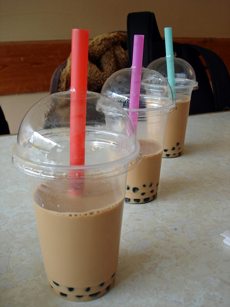

About Victoria
Victoria is a 28 year old aspiring programmer. She originally grew up in Overland Park, Kansas, and generally has that good ol' midwestern vibe. She has spent time in Missouri, Indiana, and Korea but most recently moved to San Francisco from Austin, Texas. In Austin, she worked as a Process Engineer for a large semiconductor manufacturing plant. She got her degrees in Chemical Engineering, a B.S. from Rice University and a M.E. from Washington University in St. Louis. She has a few hobbies including baking, tap dancing, and nail art. One of Victoria's quirks is she has a passionate love for boba tea. So good!
